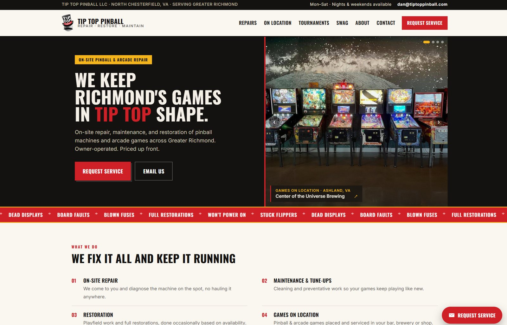

Client website · Live
Tip Top Pinball
A local repair business, with a website built around its customers.
I redesigned and launched the site, wrote service-area content, configured local SEO and its Google Business Profile, and provide monthly maintenance.